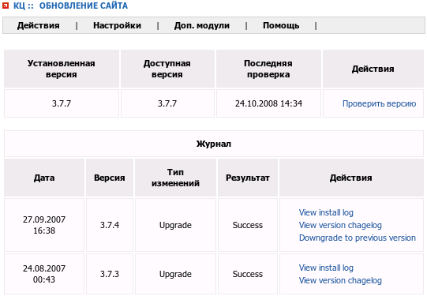
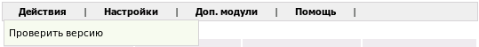
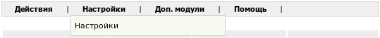
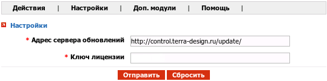

Название
Обновление системы — Обновление системы до последней версии
О модуле
|
| Тип | Административный |
| Можно создать копий | Только одну |
| Присутствует по умолчанию | Да |
| Можно удалять | Да |

Модуль позволяет обновить систему до актуальной версии.
Доступные действия:

- Проверить версию
Есть ли обновленная версия системы.
- View install log
Посмотреть лог установки.
- View version chagelog
Посмотреть возможности и исправления новой версии.
- Downgrade to previous version
Откатиться до предыдущей версии.
Настройки

Модуль имеет две обязательные настройки:

- Адрес сервера обновлений
Адрес сервера обновлений
- Ключ лицензии
Ваш персональный ключ.